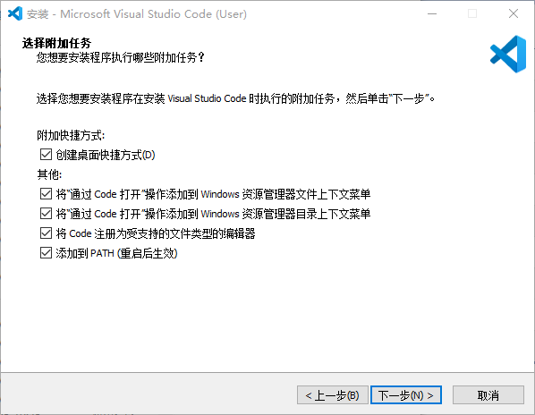

Misc
VSCode 配置
前言
作为 VSCode 资深用户，从第一次下载到如今，踩了一个又一个坑，在这里记录一下我的配置方法以及遇到的一些问题。
准备
在官网下载后，点开安装程序，建议勾选以下所有选项：

等待安装完毕即可。
插件
插件是 VSCode 的核心，其强大的插件开发社区是一大亮点。
打开左侧的扩展管理器，搜索并点击安装便可将插件添加到 VSCode。
如搜索 chinese，安装中文语言包。
可以在终端用 code --install-extension <extension-id> 或按 F1 / Ctrl+Shift+P 打开命令面板，搜索 ext install 并选择 Extensions: Install Extension，输入插件名称或 ID 安装插件。
附录 有一些常用的插件。
配置
VSCode 默认是不支持编译运行 C++ 的，需要安装插件 C/C++ 并配置文件。
Ctrl+K Ctrl+O 打开一个工作文件夹，并新建 .vscode 文件夹，并新建两个文件 tasks.json 和 launch.json。
Tasks
tasks.json 文件用来配置编译任务，可以配置多个编译任务，每个任务对应一个编译命令。
尝试在 tasks.json 文件中添加以下内容：
1 2 3 4 5 6 7 8 9 10 11 12 13 14 15 16 17 18 19 20 21 22 23 24 25 26 27 28 29 30 31 32 33 34 35 36 37 38 39 40 41 42 43 44 45 46 47 48 49 50 51 52 53 54 55 56 57 58 | |
其中 label 字段是任务的名称，command 字段是编译器，args 字段是编译命令，cwd 字段是编译命令的运行目录，isDefault 字段是是否为默认编译任务。
之所以输出为 a.exe，是为了兼容源代码文件名中的中文字符，如果不需要，可以改为 ${fileBasenameNoExtension}.exe。
Warning
非必要不要更改 cwd，type，problemMatcher等字段，否则可能导致任务执行失败。
Launch
launch.json 文件用来配置调试任务，可以配置多个调试任务，每个任务对应一个调试命令。
尝试在 launch.json 文件中添加以下内容：
1 2 3 4 5 6 7 8 9 10 11 12 13 14 15 16 17 18 19 20 21 22 23 24 25 | |
其中一般只需要配置 preLaunchTask 与 program 字段，前者指定编译任务，后者指定运行程序。
全局配置
你是否有这样的烦恼：每次新建 VSCode 工作文件夹都要配置 tasks.json 和 launch.json？每次编译都会自动生成 .vscode 文件夹？
VSCode 的全局 tasks.json 配置位于 %APPDATA%\Code\User\tasks.json，可以编辑该文件来配置全局编译任务。
而 launch.json 配置位于 %APPDATA%\Code\User\settings.json，在其中加入以下内容：
1 | |
这样即可实现一次配置，终身受益（